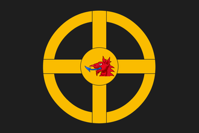

|  | |
|---|---|
| 约姆斯维京 | |
| 政府等级 | |
| 主流文化 | |
| 首都 | |
| 政体 | |
| 国教 | |
| 科技组 | |
| 约姆斯维京的理念 |
| +1 陆军将领冲击 +5% 训练度 |
| +10% 步兵作战能力
|
|
|
约姆斯维京（英文：Jomsvikings）是维京时代极负盛名的一个雇佣兵团和战士社团，其组织结构与后来欧洲的骑士团类似，比如  条顿骑士团或者
条顿骑士团或者  利沃尼亚骑士团。他们主要由流浪的维京战士组成，崇拜诺斯诸神如奥丁和托尔，坚持信奉北欧原始宗教诺斯信仰。他们在波罗的海南岸建立了自己的营地，独立于北欧各国之外，接受北欧各国的雇佣兵委托，参与了很多著名的战争，威名赫赫。但随着北欧逐渐基督教化，约姆斯维京日益衰落。1043年挪威-丹麦国王马格努斯一世为了加强中央集权，解除了和约姆斯维京人的合约，派兵攻克了约姆斯维京人的据点。约姆斯维京的瓦解成为了维京时代结束的重要里程牌。
利沃尼亚骑士团。他们主要由流浪的维京战士组成，崇拜诺斯诸神如奥丁和托尔，坚持信奉北欧原始宗教诺斯信仰。他们在波罗的海南岸建立了自己的营地，独立于北欧各国之外，接受北欧各国的雇佣兵委托，参与了很多著名的战争，威名赫赫。但随着北欧逐渐基督教化，约姆斯维京日益衰落。1043年挪威-丹麦国王马格努斯一世为了加强中央集权，解除了和约姆斯维京人的合约，派兵攻克了约姆斯维京人的据点。约姆斯维京的瓦解成为了维京时代结束的重要里程牌。
这个国家在欧陆风云4游戏中并不存在，只能通过王国风云II的转档编辑器转档欧陆风云4获得。